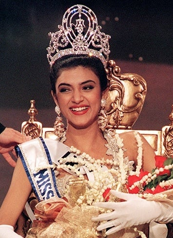
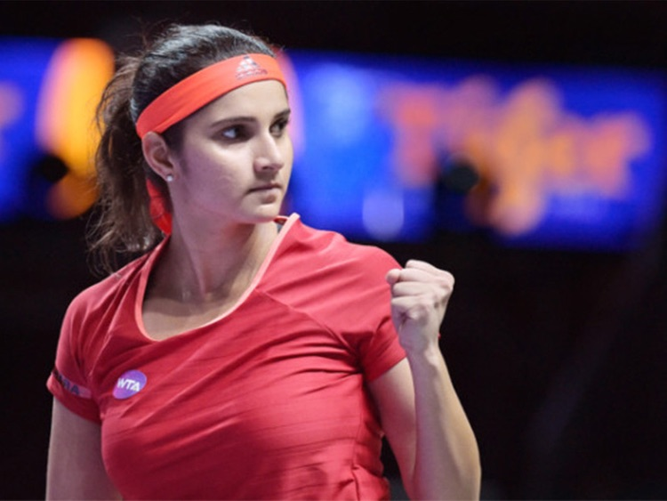
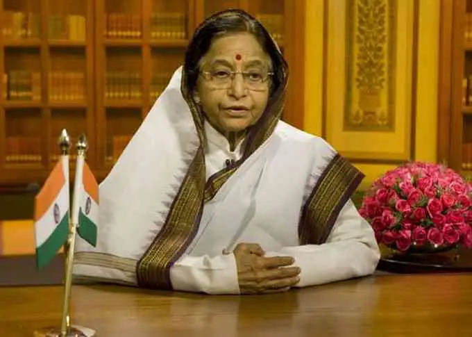
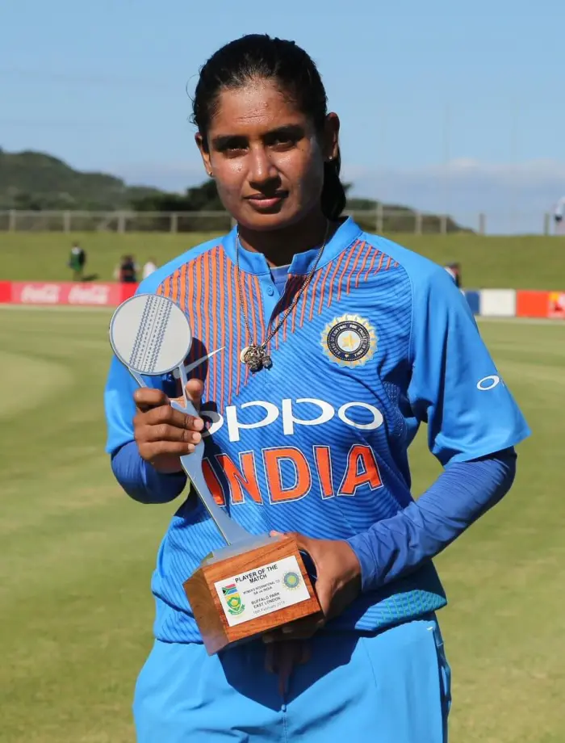
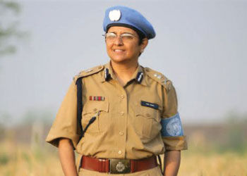
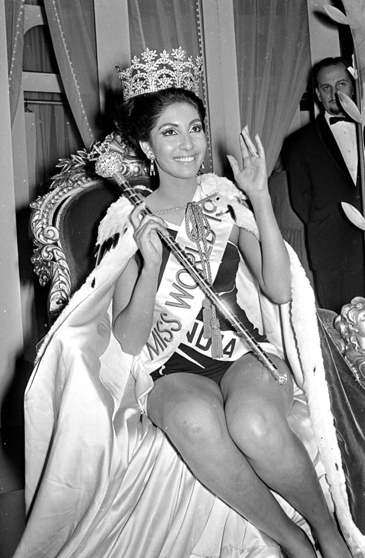
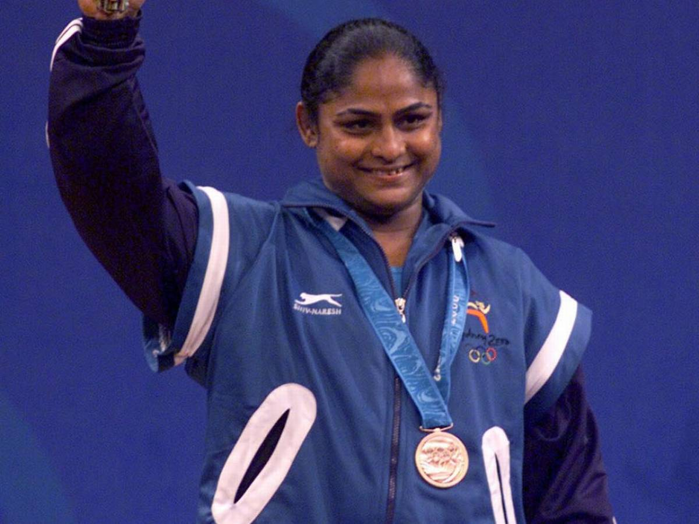

Name:Valeti Varshitha
Roll no:323103382059
Branch:CSM
GREAT INDIAN WOMEN
Sushmita Sen is an Indian actress and beauty queen who was crowned Miss Universe in 1994. She was the first Indian woman to win the Miss Universe title. Born on November 19, 1975, in Hyderabad, India, Sushmita made her acting debut in Bollywood with the film "Dastak" in 1996. She has since appeared in various Hindi, Tamil, and Bengali films.

Sania Mirza, born on November 15, 1986, is an Indian professional tennis player who has excelled in doubles. She reached the world No. 1 ranking in women's doubles, winning multiple Grand Slam titles in women's and mixed doubles events. Mirza has received accolades, including the Arjuna Award, Padma Shri, and Rajiv Gandhi Khel Ratna. Beyond tennis, she is recognized for her advocacy for women in sports and involvement in philanthropy.

Kalpana Chawla (March 17, 1962 – February 1,2003) was an Indian-American astronaut and the first woman of Indian origin in space. She earned degrees in aeronautical engineering, including a Ph.D. in aerospace engineering from the University of Colorado. Chawla worked in the aeronautics industry before joining NASA.
In 1997, she flew on the Space Shuttle Columbia, becoming the first woman of Indian descent in space. Tragically, on her second mission in 2003 (STS-107), the Columbia disintegrated during re-entry, resulting in the loss of Chawla and the entire crew.

Pratibha Patil, born on December 19, 1934, is an Indian politician associated with the Indian National Congress. She served as the Governor of Rajasthan before becoming the 12th President of India in 2007, making history as the first woman to hold this position. Her term lasted until 2012. Patil had a long political career, including serving as a Member the Maharashtra Legislative Assembly. After her presidency, she remained active in social and educational initiatives.

Mithali Raj, born on December 3, 1982, is an accomplished Indian cricketer known for her remarkable career in women's cricket. Debuting in 1999, she has been a consistent and record-setting batswoman. Mithali captained the Indian women's cricket team from 2004 and has received prestigious awards, including the Padma Shri in 2015. Beyond her on-field achievements, she advocates for women's sports, contributing to the growth of women's cricket in India.

Kiran Bedi, born on June 9, 1949, is a retired Indian Police Service officer and a prominent social activist. She was the first woman to join the Indian Police Service in 1972. Bedi has held various significant positions during her career, including serving as the Director General of Police in the Union Territory of Puducherry.

Reita Faria, born on August 23, 1943, is an Indian model and doctor who made history as the first Asian woman to win the Miss World title in 1966. Born in Mumbai, India, Faria's achievement marked a significant milestone in the pageant's history. After her reign as Miss World, she pursued a medical career, becoming a qualified doctor. Reita Faria's trailblazing success has left a lasting impact on the world of beauty pageants in India.

Karnam Malleswari, born on June 1, 1975, is a former Indian weightlifter and the first woman from India to win an Olympic medal. She achieved this historic feat at the Sydney Olympics in 2000, securing a bronze medal in the 69 kg weight category. Malleswari is renowned for her contributions to Indian sports and weightlifting, and her groundbreaking achievement has inspired aspiring athletes across the country.

If you want to know more about them click on their image